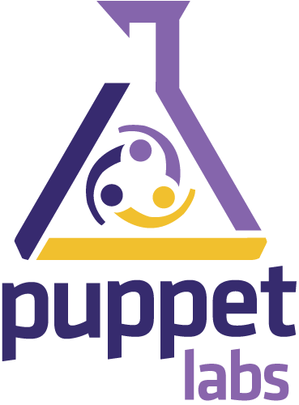

Who are you, where do you work, and what would you like to get out of the course?
What’s your experience and comfort level with Ruby?
Before we go any farther, lets assign a hostname to our VMs (feel free to chose anything); make it persist across reboots:
root@localhost # hostname training.puppetlabs.lan root@localhost # bash root@training # vi /etc/sysconfig/network
Edit /etc/hosts to include an entry for your ip, fqdn and shortname.
root@training # vi /etc/hosts
Now we are ready to move on to installation.
-s to get a feel for the optionsroot@training # cd ~/puppet-enterprise/ root@training # ./puppet-enterprise-installer \ -s answers.txt
root@training # ./puppet-enterprise-installer \ -a answers.txt
(Optionally, you may omit all flags to be prompted for configuration questions)
The ruby executable is how Ruby programs are generally run:
$ ruby script.rb
The executable supports a large number of commandline options, the most important of which are:
-e CODE-r LIBRARY-I PATH$LOAD_PATH before startup-cInside a Ruby process, a few special constants are very important:
ARGVENV“IRB” is interactive Ruby, a read-eval-print-loop (REPL).
Many of the examples in the class will be shown as sample irb
sessions; they look like the following:
irb(main):001:0> 1 + 1 => 2
Note the irb(main):001:0> and => lines; they indicate code input and the
results of evaluation, respectively.
To get a condensed prompt, you can invoke irb like this:
$ irb --simple-prompt
NOTE: irb is usually distributed with Ruby but, depending on your
package management system, you may need to install it separately.
“ri” is a tool used to output Ruby documentation. It is most frequently used for core and standard library objects.
------------------------------------------------------ String#capitalize
str.capitalize => new_str
From Ruby 1.8
------------------------------------------------------------------------
Returns a copy of _str_ with the first character converted to
uppercase and the remainder to lowercase.
"hello".capitalize #=> "Hello"
"HELLO".capitalize #=> "Hello"
"123ABC".capitalize #=> "123abc"
NOTE: ri is usually distributed with Ruby but, depending on your
package management system, you may need to install it separately.
Most external Ruby packages can be installed with RubyGems.
Commonly used commands:
> gem list
> gem search --remote rspec
> gem install rspec
Use exit (for exit code 0)
>> exit $
Provide a different exit code:
>> exit 1 $ echo $? 0 $
>> "this is a string" >> 'this is also a string'
Strings support a large number of methods out-of-the-box:
$ ri String
String interpolation is done with #{}:
>> name = "Puppet"
>> puts "#{name} is awesome"
Puppet is awesome
Single-quoted strings do not interpolate:
>> name = "Puppet"
>> puts '#{name} is awesome'
#{name} is awesome
Some useful methods:
>> "my_string".gsub('my', 'your')
=> "your_string"
>> "Puppet is aWesome".downcase => "puppet is awesome"
>> "Puppet is awesome\n".chomp => "Puppet is awesome"
>> "my string".methods - Object.methods => ["%", "rindex", "map", "<<", "split", "any?", "sort", "strip", "size", "downcase", "min", "gsub!", "count", "succ!", "downcase!", "intern", ...
To search through the list of methods, much like the command line tool ‘grep’ you can do:
>> ("my string".methods - Object.methods).grep /sub/
=> ["gsub!", "sub", "gsub", "sub!"]
Quick-hint magic of ruby!
Ruby supports the full range of Perl regular expressions through its
Regexp class and // literal.
>> /This is a Regexp/.class => Regexp
Matching is usually done via the String#=~ method:
>> "Puppet is awesome" =~ /awesome/ => 10
Regular expression grouping is done via parentheses and matches set
$N (as in Perl).
>> "Puppet is awesome" =~ /^(\w+) is awesome/ => 0 >> $1 => "Puppet"
You can also get a MatchData instance with all the information about
the match:
>> match = "Puppet is awesome!!!".match(/^(\S+) is awesome/) => #<MatchData "Puppet is awesome" 1:"Puppet"> >> match[0] => "Puppet is awesome" >> match[1] => "Puppet" >> match.post_match => "!!!"
Interpolation is the same as with strings.
/This matches #{some_variable}/
Ruby numerics are usually represented by the classes Integer and Float
Operators called on numerics are actually methods; the following are equivalent:
>> 2 * 3.0 => 6.0 >> 2.*(3.0) => 6.0
Ruby methods, similar to functions and subroutines in other languages, enable you to reuse code.
Methods are defined using the def keyword, have a name, and
an arbitrary number of parameters. The return keyword is optional
— the value of the last expression in a
method is automatically returned by default.
>> def multiply(x, y) >> x * y >> end
You can usually invoke a method with or without parentheses; it’s generally recommended to use parentheses if there are more than one or two arguments.
>> multiply 1, 2 => 2 >> multiply(3, 4) => 12
You can accept a variable number of arguments by prefixing the last argument with * (the splat operator):
>> def number_of_args(*numbers) >> numbers.length >> end >> number_of_args(3, 4, 5) => 3
You can also set defaults for the last arguments:
>> def multiply(x, y=10) >> x * y >> end >> multiply(30) => 300
Write a method filter_password that censors a password from provided text.
given arguments: ‘my password is fooword’, ‘fooword’ it should return ‘my password is xxxxxxx’ like so:
>> filter_password('my password is fooword', 'fooword')
=> "my password is xxxxxxx"
HINT: Try "string" * 5 in irb and see what it does. Try you using the tool ri or "string".methods to see what methods are available for a string.
Ruby contains the following types of variables.
varname # Normal variable @varname # Instance variable $varname # Global variable - should almost never be used Varname # Constant (usually only used for Classes/Modules) VARNAME # Constant
What is the value of x?
>> x = 3 >> def set_x(value) >> x = value >> end >> set_x(2) >> puts x
Arrays are lists of arbitrary elements.
>> names = ['joe', 'jack', 'jim'] >> names[1] => "jack"
They support a wide range of operations, including:
>> names.push 'james' => ['joe', 'jack', 'jim', 'james'] >> names.unshift 'jill' => ['jill', 'joe', 'jack', 'jim', 'james'] >> names.pop => "james" >> names.shift => "jill"
Hashes are sets of key/value pairs (similar to HashMap and Dictionary types in other languages).
They can be created using the Hash literal, {}:
>> person = {’name’ => ’joe’}
You can “index” into a hash by a key to retrieve or set values:
>> person['name']
=> "joe"
>> person['name'] = 'jim'
>> person
=> {"name" => "jim"}
In conditionals, everything evaluates to true except:
falsenilNotice 0 isn’t on that list.
>> if 0 >> puts "Yes!" >> else >> puts "No!" >> end Yes!
if some_condition do_something elsif some_other_condition do_some_other_thing else do_something_else end
unless some_condition do_something else so_something_else end
Note: Many Rubyists consider unless confusing (especially when used
in conjunction with else) and use if ! instead.
Case statements allow you to test multiple conditions quickly and flexibly:
name = "Joey" case name when "John" puts "Go away, John." when "Joseph", /^joey?/i puts "Hello, Joe!" else puts "Umm, hi." end
The simplest loop in Ruby is loop. Ruby will loop forever until a
break (or return, or throw) is encountered:
loop do # loops forever end
This will loop while a condition is met:
while some_condition # loops until some_condition end
Enumerable classes support iterating over members via the each method, which accepts a block.
>> people = ['joe', 'jim', 'john'] >> people.each do |person| >> puts person >> end joe jim john => ["joe", "jim", "john"]
Blocks are an Object representation of code.
They can be passed to any method, which can invoke them with the yield keyword.
A block being passed to a method is indicated with do and end
Arguments can be yielded to a block.
people.each do |person| puts person end
class Array
def each(&block)
current_index = 0
while current_index < self.length
yield self[current_index]
current_index+=1
end
end
end
Iterates over the elements of the array, returns a new array consisting of the values returned from all of the yielded blocks.
>> proper_nouns = ['joe', 'jim', 'john'].collect do |person| >> person.capitalize >> end => ["Joe", "Jim", "John"]
‘collect’ is also known as ‘map’
Array#select iterates over the elements of the array, returns a new array consisting of the elements whose associated blocks returned true.
>> natural_numbers = [1,2,3,-1].select do |int| >> int > 0 >> end => [1, 2, 3]
Array#reject, rejects elements whose block returns true.
>> negatives = [1,2,3,-1].reject do |int| >> int > -1 >> end => [-1]
When iterating over Hash keys and values, keys and values are
yielded separately:
>> modes = {'/path/to/foo' => 655, '/path/to/bar' => 700}
>> modes.each do |key, value|
>> puts "The mode for #{key} is #{value}"
>> end
The mode for /path/to/foo is 655
The mode for /path/to/bar is 700
Enumerable classes support the reduction of its members to a single value via inject. This is similar to reduce, fold, accumulate, and compress from various other languages.
>> people = [1, 2, 3]
>> people.inject(0) do |sum, n|
>> puts "#{sum}:#{n}" # debugging to show us how its calculated
>> sum+n
>> end
6
‘inject’ is also known as ‘reduce’ or ‘fold’
Everything in Ruby is an object.
Objects group data and behaviors.
Objects are instances of classes.
>> class PuppetUser >> end >> p = PuppetUser.new => #<PuppetUser:0x100318f48> >> p.class => PuppetUser
Objects have attributes and methods.
The initialize method is called implicitly during instantiation and accepts arguments.
class PuppetUser
def initialize(name)
@name = name
end
end
Classes are instantiated with the new method.
>> me = PuppetUser.new('Awesomo-Jenkins')
=> #<PuppetUser:0x100141828 @name="Awesomo-Jenkins">
Instance variables frequently need setters and getters.
class PuppetUser
def initialize(name)
@name = name
end
def name
@name
end
def name=(name)
@name = name
end
end
Explicitly creating all of these methods is annoying…
These methods automatically create setters and getters:
class PuppetUser attr_accessor :name end
Modules can be used to share related behavior.
module BeerDrinker
def cheer
'woo-hoo'
end
end
Modules can be mixed-in to an Object with the include function.
class PuppetUser include BeerDrinker end
Since all PuppetUsers are also BeerDrinkers, all of the BeerDrinker methods can now be invoked on PuppetUsers.
>> PuppetUser.new('dan').cheer
=> "woo-hoo"
As a single string:
text = File.read('/path/to/filename')
Or as an array of strings:
lines = File.readlines('/path/to/filename')
File.open('/path/to/filename') do |f|
# You can call "f.read" or "f.readlines" here
end
Given a list of filenames as arguments from the commandline, output those files to standard output.
$ ruby backwards.rb a.txt b.txt c.txt
The ARGV constant will contain the filenames as an Array (eg, in the example
above, it would be ["a.txt", "b.txt", "c.txt"]).
File.open('/path/to/filename', 'w') do |f|
f.puts "This will be added as a line with a trailing newline"
f.write "This won't have a trailing newline"
end
File.open('/path/to/filename', 'a') do |f|
f.puts "This will get added to the file"
end
Expand the backwards.rb example to write the reversed
output to another file, given as the last argument.
See how changing the mode from "w" to "a" affects the contents
of the file over multiple runs.
Use FileUtils.cp and FileUtils.mv
require 'fileutils' FileUtils.cp '/path/to/file', '/path/to/destination' FileUtils.mv '/path/to/file', '/path/to/destination'
FileUtils.rm '/path/to/file' FileUtils.mkdir_p '/path/to/some_dir'
filename = '/path/to/filename' unless File.executable?(filename) puts File.stat(filename).mode.to_s(8) File.chmod(0755, filename) end
puts File.stat(filename).uid File.chown(uid, gid, filename)
To join paths, use File.join
>> File.join("/", "etc", "passwd")
=> "/etc/passwd"
To check the existence of a file path or its type, use:
>> File.exist?('/path/to/file')
=> true
>> File.file?('/path/to/file')
=> true
>> File.directory?('/path/to/file')
=> false
>> File.symlink?('/path/to/file')
=> false
There are a number of ways to glob file paths in Ruby.
Dir.glob('**/*.rb') do |path|
# Do something with `path`
end
Dir['**/*.rb'].each do |path|
# Do something with `path`
end
The pathname standard library is a hidden gem for filesystem operations.
Here’s some sample usage:
require 'pathname'
root = Pathname.new('/path/to/app')
logs = root + 'logs'
logs.children.each do |child|
if child.file? && child.size > 10485760
child.delete
else
child.chmod(700)
end
end
To raise an exception, use the raise keyword.
raise ArgumentError, "That's not right."
There are a number of exception classes in Ruby, but ArgumentError
and RuntimeError are the most commonly raised.
Puppet defines a number of its own exception classes
Puppet::ErrorPuppet::ExecutionFailureTo rescue an exception, you generally use begin .. rescue .. end
clauses:
begin raise "BOOM!" rescue puts "A 'BOOM!' happened, but we're ignoring it." end
In methods, the begin and end can be removed if you’re rescuing the entire body of
the method:
def my_method do_something_that_might_explode! rescue puts "Something exploded, but we're ignoring it." end
You can use an ensure clause to make sure something always
happens, with or without an exception being raised. This is commonly
done with file and socket operations.
def process_file(file) # Do something with the file rescue puts "We couldn't process the file." ensure # We always close the file, regardless file.close end
Use String#to_i
>> "23".to_i => 23 >> "badvalue".to_i => 0 >> "badvalue12".to_i => 0 >> "12badvalue".to_i => 12
Use Kernel.Integer
>> Integer("23")
=> 23
>> Integer('badvalue')
ArgumentError: invalid value for Integer: "badvalue"
Executes a command in a subshell, and returns true if successful.
>> system 'echo hello' hello => true
The exit code is available in $?:
>> $? => #<Process::Status: pid=8510,exited(0)> >> $?.success? => true >> $? == 0 => true
Replaces the current process by running the given external command.
>> exec 'echo hello' hello #
As you can see, IRB has terminated because control was handed over to echo.
You can use backticks to get the standard output of a command.
>> `echo hello` => "hello\n"
An alternate form is %x{}:
>> %x{echo hello}
=> "hello\n"
To interact with a command’s standard in and out, use IO.popen with
a w+ mode.
IO.popen('sort', 'w+') do |cmd|
cmd.puts 'linux', 'darwin', 'win32'
cmd.close_write
puts cmd.read
end
Use open3, part of the standard library.
require 'open3'
Open3.popen3('some-command') do |stdin, stdout, stderr|
# Use the streams (make sure you close stdin)
end
Reusing the example from the top:
require 'open3'
Open3.popen3('sort') do |stdin, stdout, stderr|
stdin.puts "linux", "darwin", "win32"
stdin.close
puts stdout.read
end
Use the net/http standard library:
require 'net/http'
response = Net::HTTP.get('projects.puppetlabs.com', '/projects/modules')
Or for multiple queries using the same HTTPS connection, you can utilise the
library net/https instead. It supports enabling SSL support with the method
use_ssl:
require 'net/https'
url = URI.parse 'https://projects.puppetlabs.com/'
http = Net::HTTP.new url.host, url.port
http.verify_mode = OpenSSL::SSL::VERIFY_NONE # Don't check against root certs
http.use_ssl = true
http.start do |agent|
puts agent.get("/projects/modules").body
puts agent.get("/projects/facter").body
#...
end
You also have the ability to set headers, deal with specific errors, POST, etc.
Yaml is a common serialization format for Ruby.
require 'yaml'
hash = {:one => ['1', '2'], :two => 'foo'}
puts hash.to_yaml
prints:
--- :one: - "1" - "2" :two: foo
Yaml can be loaded from a file:
require 'yaml'
a = YAML.load_file('/var/opt/lib/pe-puppet/state/last_run_summary.yaml')
puts a['changes']['total']
Content is converted into Ruby types: Hashes, Arrays, Strings etc.
To add your own custom facts, add .rb files in
<modulepath>/<modulename>/lib/facter
Facter.add('gem_count') do
setcode do
IO.popen('gem list').readlines.length.to_s
end
end
You can test facts locally by setting the FACTERLIB environment variable:
export FACTERLIB=<modulepath>/<modulename>/lib
The value returned from the setcode block should be either:
nil (same as "")Create:
yum_#{package}_versionyum_ruby_version => 1.8.5-5.el5yum_openssh_version => 4.3p2-72.el5Hints:
yum list installed (or similar)Facter.add code in other blocksfacter --puppet yum_ruby_version or facter --puppet | grep yumString#split will probably be useful hereCreate a fact that returns a comma delimited list of tcp ports being listened on.
collect and compactHints:
netstat -nlt to get the list you need to work fromA confine statement in a fact definition restricts the fact to systems where the
given key (another fact) is equal to value. If the value is an
array, it must be any of the members. The match is not case sensitive. The
match cannot be a regex.
Facter.add 'something_using_dscl' do confine :kernel => 'darwin' # ... end
Create:
yum_version which returns the version of yumhas_yum which is ‘true’ or ‘false’Use:
confine :has_yum => 'true' with your yum_version fact:osfamily to the appropriate platforms (CentOS, Redhat, Fedora – in short not Debian)You may want to use Facter::Util::Resolution.exec for shell execution,
since it handles looking up executables via which,
converting empty results to nil. It’s especially useful when a
command [or chain of them] may fail.
Facter.add("physicalprocessorcount") do
confine :kernel => :linux
setcode do
Facter::Util::Resolution.exec('grep "physical id" /proc/cpuinfo | \
cut -d: -f 2|sort -u|wc -l')
end
end
Commonly you can use Facter::Util::Resolution.exec to handle
situations like we handled with the yum_version and has_yum
examples, without having to confine the fact (or deal with nasty
standard error output).
Facter.add('yum_version') do
setcode { Facter::Util::Resolution.exec('yum --version | head -1') }
end
On CentOS:
>> Facter.value('yum_version')
=> "3.2.19"
On OSX:
>> Facter.value('yum_version')
=> nil
If your fact depends on executing a specific executable, you should
probably be using Facter::Util::Resolution.exec instead of explicit
confines.
Executing a line of shell script is so commonplace in Facter that it
supports a shorter form for it; just pass a string to setcode instead
of a block. It will handle calling it via
Facter::Util::Resolution.exec for you:
Facter.add('yum_version') do
setcode 'yum --version | head -1'
end
Functions are Ruby code that run during compilation on the host running
puppet master.
They are commonly used for:
A function is either a :statement or :rvalue.
:statement:rvalueA function is easy to add:
Puppet::Parser::Functions.newfunction(:myfunc) do # ... end
If it’s an :rvalue:
Puppet::Parser::Functions.newfunction(:myfunc, :type => :rvalue) do # ... end
The name of the function and the filename must match.
For example, a function myfunc would be located in:
<modulepath>/<modulename>/lib/puppet/parser/functions/myfunc.rb
When a function is defined, a new method function_<functionname> is
added to the parser scope. Since all functions are executed within
this scope, calling another function is simply a matter of invoking
the other function’s generated method.
In this example, we call a different function, myotherfunc,
multiplying all arguments by 2.
Puppet::Parser::Functions.newfunction(:myfunc) do |args|
new_args = args.map { |arg| arg * 2 }
function_myotherfunc(new_args)
end
Puppet::Parser::Functions.newfunction(:myotherfunc) do |args|
# Does something interesting with doubled arguments
end
Documentation for puppet doc is automatically generated. Everyone should write inline documentation for their custom puppet functions.
To do so, pass a :doc option to newfunction:
Puppet::Parser::Functions.newfunction(:mine, :doc => "This function implements selfish behaviour. Example usage includes...") do # ... end
Raise Puppet::ParseError within your function:
raise Puppet::ParseError, "BOOM! This function exploded."
Verify a function has been defined (and what its generated method is for the parser scope):
>> require 'puppet' >> Puppet::Parser::Functions.function(:myfunc) => "function_myfunc"
You can see the list of loaded functions:
>> Puppet::Parser::Functions.functions.keys => [:err, :warning, :alert, :notice, :emerg, :info, :crit, :debug]
You can see functions get added to this list when autoloading occurs:
>> Puppet::Parser::Functions.function(:template) => "function_template" >> Puppet::Parser::Functions.functions.keys => [:err, :warning, :alert, :template, :notice, :emerg, :info, :crit, :debug]
You can test your loaded functions in IRB by declaring a new Puppet scope object and calling the function on the object:
>> require 'puppet'
=> true
>> scope = Puppet::Parser::Scope.new
=> #<Puppet::Parser::Scope:0xb77c53c8 @symtable={}, @class_scopes={}, @defaults={}, \
@namespaces=[""], @ephemeral=[#<Puppet::Parser::Scope::Ephemeral:0xb77c5300 \
@parent=nil, @symbols={}>], @tags=[]>
>> jeff = scope.function_getemail(['/tmp/emails.yaml', 'jeff'])
=> "jeff_email@puppetlabs.com"
Notice the first argument to the function is an array with multiple arguments.
You can also you use puppet directly to test a function:
puppet apply -e 'notice(getemail('/tmp/emails.yaml','jeff'))'
extractvalueThe function should accept two arguments:
Invoke the function inside a manifest:
$email = extractvalue(“/etc/emails.yml”, “joe”)
Assuming the file format is YAML, the function should return the value
for that key. For instance, with the following /etc/emails.yml:
--- john: john@example.com joe: joe@example.com
$email should be set to joe@example.comYou have to know two things:
How do you answer those questions?
You could run the code …. everytime you make any changes
Why not have the computer run the code for you?
Rspec is a unit testing framework.
<modulepath>/join/spec/unit/puppet/parser/functions/join_spec.rb
require 'puppet'
describe Puppet::Parser::Functions.function(:join) do
let :scope do
Puppet::Parser::Scope.new
end
it "should turn an array of items into a string" do
scope.function_join([['foo','bar','baz'], ':']).should == 'foo:bar:baz'
end
it "should fail if the correct arguments are not supplied"
end
The rspec method should is used to assert that an expectation is satisfied.
(1+2).should == 3
It also verifies behavior that fails
(1+1).should be_nil
Rspec provides helpers for additional expectations:
[1,2,3].should include(2)
expect { 1 / 0 }.to raise_error(ZeroDivisionError)
The rspec method let defines a memoized helper method that returns a value. It is lazy-evaluated, so isn’t evaluated until it’s called. The value is cached amongst calls within the SAME example, but not across SEPARATE examples.
$count = 0
describe "let" do
let(:count) { $count += 1 }
it "memoizes the value" do
count.should == 1
count.should == 1
end
it "is not cached across examples" do
count.should == 2
end
end
The rspec method subject specifies the object’s behavior that being described by the test. It works in the same manner as the let method, however creates a new instance of your object.
Explicitly set subject:
describe ‘it should create a new person’ do
subject { Person.new(‘jeff’) }
it ‘should create a new person named jeff’ do
subject.name.should == ‘jeff’
end
end
Implicitly set subject:
describe Person.new(‘jeff’) do
it ‘should create a new person named jeff’ do
subject.name.should == ‘jeff’
end
end
Use let as you would an instance variable – the benefit is that it’s lazy-evaluated ONLY when it’s called in an example. Use subject if not implicitly set to set the object’s behavior that we’re testing.
describe 'beerdrinkers' do
subject { PuppetUser.new('dan') }
let :cheer { 'woo-hoo' }
it "should create a 'woo-hoo' cheer" do
subject.cheer.should == cheer
end
end
describe Person.new('jeff') do
it 'should create a new person named jeff' do
subject.name.should == 'jeff'
end
end
join so that it satisfies the previous specification:<modulepath>/<modulename>/lib/puppet/parser/functions/join.rb
require 'puppet'
describe Puppet::Parser::Functions.function(:join) do
let :scope do
Puppet::Parser::Scope.new
end
it "should turn an array of items into a string" do
scope.function_join([['foo','bar','baz'], ':']).should == 'foo:bar:baz'
end
it "should fail if the correct arguments are not supplied"
end
Starting in 2.6.x, Puppet manifests can be written in ruby.
file '/etc/ssh/sshd_config', :source => 'puppet:///modules/ssh/sshd_config', :require => 'Package[ssh]'
This would be the same as:
file { '/etc/ssh/sshd_config':
source => 'puppet:///modules/ssh/sshd_config',
require => 'Package[ssh]',
}
The resource type methods can only be called from block arguments to container methods.
node – creates a node blockdefine – creates a define blockhostclass – creates a class block
hostclass :ssh do
package "ssh",
:name => 'openssh',
:ensure => :present
file "/etc/ssh/sshd_config",
:source => "puppet:///ssh/sshd_config",
:require => "Package[ssh]"
service :sshd,
:ensure => :running,
:require => "File[/etc/ssh/sshd_config]"
end
Below is an example of something that requires iteration:
define :mkdir_p do
name = @name
until name == '/'
file name, :ensure => 'directory'
name = File.dirname(name)
end
end
node 'default' do
mkdir_p '/tmp/foo/bar/baz'
end
Specification of attributes that can be used to describe a configuration element.
File resource can be described in terms of
package {'apache2':
ensure => installed,
}
>ls /usr/lib/ruby/site_ruby/1.8/puppet/provider/package/ aix.rb aptrpm.rb freebsd.rb pkgdmg.rb rpm.rb urpmi.rb appdmg.rb blastwave.rb gem.rb pkg.rb rug.rb yumhelper.py apple.rb darwinport.rb hpux.rb portage.rb sunfreeware.rb yum.rb aptitude.rb dpkg.rb nim.rb ports.rb sun.rb zypper.rb apt.rb fink.rb openbsd.rb portupgrade.rb up2date.rb
Types specify the interface of a resource.
When writing a type in Ruby, we have to specify:
Resource types depend on providers to translate specification into implementation.
Several providers may be available for a given resource type to provide cross-platform support.
For example, the following providers exist for the package type:
# ls /opt/puppet/lib/ruby/site_ruby/1.8/puppet/provider/package aix.rb blastwave.rb macports.rb pkgdmg.rb rpm.rb yumhelper.py appdmg.rb dpkg.rb msi.rb pkg.rb rug.rb yumhelper.pyc apple.rb fink.rb nim.rb pkgutil.rb sunfreeware.rb yumhelper.pyo aptitude.rb freebsd.rb openbsd.rb portage.rb sun.rb yum.rb apt.rb gem.rb pacman.rb ports.rb up2date.rb zypper.rb aptrpm.rb hpux.rb pip.rb portupgrade.rb urpmi.rb
Property syncronization has the following steps:
retrieve – determine current value of a property (is value)insync? – see if the current (is) value is syncronized with the desired (should) value.sync – synchronize the resourceWhen iterating over the properties for a Type, the implementaion of sync and retrieve are delegated to the provider.
To add a type, use the Puppet::Type.newtype method.
# <modulepath>/<modulename>/lib/puppet/type/media.rb Puppet::Type.newtype(:media) do # ... end
Types should be put in:
<modulepath>/<modulename>/lib/puppet/type/
The name of the type and the filename must match.
For example, a type media would be located in:
<modulepath>/<modulename>/lib/puppet/type/media.rb
Use the desc method:
Puppet::Type.newtype(:media) do desc "This is an example to sync media files." # ... end
Atrributes are used to describe a resource’s desired state.
user {'dan':
ensure => present,
managehome => true,
gid => 'dansgroup',
}
There are two types of attributes:
Properties model the desired state of a system.
They can be queried from the underlying system, compared, and synchronized with the desired state.
Parameters are just data that is made available to the providers when they synchronize properties.
These are generally values that are only applicable during resource creation, but can only specify read-only attributes.
Can anyone tell which attributes are the properties? parameters?
file { '/tmp/foo':
ensure => file,
mode => '664',
owner => 'root',
group => 'root',
checksum => md5,
content => 'foo',
}
To add a parameter, use newparam:
Puppet::Type.newtype(:media) do
# ...
newparam(:path) do
# ...
end
end
Use the desc method inside the parameter:
Puppet::Type.newtype(:media) do
# ...
newparam(:path) do
desc "The location to store the media file"
# ...
end
end
Set the namevar with the :namevar option to newparam:
Puppet::Type.newtype(:media) do
# ...
newparam(:path, :namevar => true) do
desc "The location to store the media file"
# ...
end
end
Use the validate method inside the parameter, raising an exception
if the value is invalid.
Puppet::Type.newtype(:media) do
# ...
newparam(:source) do
desc "The source URL for the file"
validate do |value|
unless value =~ /^(https?|ftp):\/\//
raise ArgumentError, "Source is not a HTTP(S) or FTP URL: #{value}"
end
end
end
end
If you have a parameter whose values you want normalized, use the munge method.
Here we make sure that the value set for this parameter is always a URI object:
Puppet::Type.newtype(:media) do
# ...
newparam(:source) do
# ...
munge do |value|
# Return a parsed URI object
URI.parse(value)
end
end
end
Use munge to modify parameters.
Munge is executed after validation.
Puppet::Type.newtype(:media) do
# ...
newparam(:source) do
desc "The source URL for the file"
validate do |value|
unless value =~ /^(https?|ftp):\/\//
raise ArgumentError, "Source is not a HTTP(S) or FTP URL: #{value}"
end
end
munge do |value|
value = URI.parse(value)
case value.scheme
when /^http/
resource[:provider] = :http
else
resource[:provider] = value.scheme.to_sym
end
value
end
end
end
Add a type, rcsrepo, that models a local version
control repository.
This type should have the following parameters:
path, a local file path (this is the namevar)source, the source URL for the repositoryYou should validate that the path is absolute and that the source is
a valid URI. Both parameters and the type should have a description.
Properties are added with newproperty:
Puppet::Type.newtype(:media) do # ... newproperty(:mode) do end end
Use the desc method inside the property definition:
Puppet::Type.newtype(:media) do
# ...
newproperty(:mode) do
desc "The mode of the file"
end
end
Use newvalues inside the property definition:
Puppet::Type.newtype(:media) do
# ...
newproperty(:mode) do
desc "The mode of the file"
newvalues(/^\d+$/)
end
end
You can use a regular expression to restrict values.
Use defaultto inside the property definition:
Puppet::Type.newtype(:media) do
# ...
newproperty(:mode) do
desc "The mode of the file"
newvalues(/^\d+$/)
defaultto '0755'
munge do |value|
# Ensure octal
unless value[0, 1] == '0'
value = "0#{value}"
end
Integer(value)
end
end
end
Add a property, revision, to our rcsrepo example.
The property should accept any non-empty, non-whitespace string value. It should have a description.
The method ensurable creates the ensure property with :present and :absent
values that interacts with a provider’s create, exists?, and
destroy methods.
Puppet::Type.newtype(:media) do ensurable # ... end
Make rcsrepo type ensurable
You can add additional values for ensure by providing
ensurable with a block and using newvalue.
Puppet::Type.newtype(:group) do
ensurable do
desc "Create or remove the group."
newvalue(:present) do
provider.create
end
newvalue(:absent) do
provider.delete
end
# ...
end
end
Set the :array_matching option to :all when defining the property:
Puppet::Type.newtype(:volume_group) do
newparam(:physical_volumes, :array_matching => :all) do
# ...
end
end
By default, :array_matching is :first. These are the only two options.
Create spec tests file:
<modulepath>/<modulename>/spec/unit/puppet/type/rcsrepo_spec.rb
Use this code, and fill out the test bodies:
require 'puppet'
require 'puppet/type/rcsrepo'
describe Puppet::Type.type(:rcsrepo) do
subject { Puppet::Type.type(:rcsrepo).new(:path => '/foo') }
it 'should accept ensure'
it 'should require that path be absolute'
it 'should not accept whitespace in a revision'
it 'should accept a valid source URI'
it 'should not accept an invalid source URI'
end
To add a provider, use the provide method on the type.
# <modulepath>/<modulename>/lib/puppet/provider/media/http.rb Puppet::Type.type(:media).provide(:http) do # ... end
Create a git provider for our rcsrepo type.
To define external commands to use from the provider, use the
commands method, which accepts a hash of command names and
executable path.
If the executable path isn’t absolute, it is looked up via which.
The provider cannot be used unless all of its commands can be found.
Puppet::Type.type(:logical_volume).provide(:lvm) do
desc "Manages LVM logical volumes"
commands :lvcreate => 'lvcreate',
:lvremove => 'lvremove',
:lvs => 'lvs',
:umount => 'umount',
:mount => 'mount'
end
Add the git command to the git provider.
You provider will automatically create methods for every specified command.
Puppet::Type.type(:mounter).provide(:nfs) do
commands :mount => 'mount'
# ...
mount('-t', 'ext3', '/path/to/device', '/mnt/mymount')
end
If a command exits with a non-0 exit code, a
Puppet::ExecutionFailure exception is raised. Often it makes sense
to rescue this exception and raise your own with more details.
begin
mount('-t', 'ext3', '/path/to/device', '/mnt/mymount')
rescue Puppet::ExecutionFailure => e
raise Puppet::Error, "Couldn't mount /path/to/device (#{e.message})"
end
To confine a provider to a fact, use confine (the same as with
facts):
Puppet::Type.type(:media).provide(:http) do confine :has_nfs => 'true' # ... end
A provider can access the resource’s attribute values using the [] method on the resource:
resource[:path] resource[:source] resource[:provider]
If your provider is for an ensurable type, it should support
create, exists?, and destroy methods:
require 'fileutils'
require 'curl'
Puppet::Type.type(:media).provide(:http) do
confine :has_nfs => 'true'
def create
Curl::Easy.download(resource[:source], resource[:path])
end
def exists?
File.file?(resource[:path])
end
def destroy
FileUtils.rm_rf(resource[:path])
end
# ...
end
exists methodAdd an exists? method to check if a repository has been
created at path. Be sure to add unit tests!
<modulepath>/<modulename>/spec/unit/provider/rcsrepo/git_spec.rb:
require 'puppet'
require 'fileutils'
describe 'The git provider for the rcsrepo type' do
let(:test_dir) { File.join('/tmp', Time.now.to_i.to_s, 'repo') }
let(:resource) { Puppet::Type::Rcsrepo.new({:path => test_dir}) }
subject { Puppet::Type.type(:rcsrepo).provider(:git).new(resource) }
# ...
after :each do
FileUtils.rm_rf(File.dirname(test_dir)) if File.exists?(test_dir)
end
end
How can you test without affecting your system?
With the expects method, you can specify which methods should be called (and how), without actually invoking them.
Stubbing should be used sparingly, to avoid testing how code works rather than if it works.
The Puppet framework uses Mocha for stubbing.
@missile.expects(:launch) @big_red_button.press
FileUtils.expects(:rm_rf).with('/')
@my_system.hose
Other useful variations:
instance.expects(:method).at_least_onceinstance.expects(:method).neverinstance.expects(:method).with {|x,y,z| x > 10}instance.unstub(:method) # To clear stubbingBoth the stubs() and expects() methods provide a method for simulating conditions with your code. The stubs() method allows you to simulate the code being run and returning a value like below:
# /tmp/file.rspec
require 'mocha'
RSpec.configure { |config| config.mock_with :mocha }
describe 'opening a file' do
let :filename do
'/tmp/file.txt'
end
it 'should call File.read' do
File.stubs(:read).with(filename).returns('File Contents')
File.read(filename)
end
end
Running the test in the previous example:
$>rspec spec.rb . Finished in 0.09533 seconds 1 example, 0 failures
File.read was stubbed out, so it was never actually EXECUTED on the system (notable because the test passes even though /tmp/file.txt doesn’t exist).
The expects() method does the same as stubs, however it ALSO establishes an EXPECTATION that the code be called.
# /tmp/file.rspec
require 'mocha'
RSpec.configure { |config| config.mock_with :mocha }
describe 'opening a file' do
let :filename do
'/tmp/file.txt'
end
it 'should call File.read' do
File.expects(:read).with(filename).returns('File Contents')
File.read(filename)
end
end
Running the test results in a passing test, but comment out the File.read line in the previous example:
# /tmp/file.rspec
require 'mocha'
RSpec.configure { |config| config.mock_with :mocha }
describe 'opening a file' do
let :filename do
'/tmp/file.txt'
end
it 'should call File.read' do
File.expects(:read).with(filename).returns('File Contents')
#File.read(filename)
end
end
Commenting out the line causes the test to fail (because the spec test EXPECTED File.read to be called during the test and it wasn’t).
$>rspec spec.rb
F
Failures:
1) opening a file should call File.read
Failure/Error: File.expects(:read).with(filename).returns('File Contents')
Mocha::ExpectationError:
not all expectations were satisfied
unsatisfied expectations:
- expected exactly once, not yet invoked: File.read('/tmp/file.txt')
# ./spec.rb:11
Finished in 0.09578 seconds
1 example, 1 failure
create methodAdd a create method to the git provider that will create the repository.
source property is set, git clone should be used to pull
it down to pathgit initgitConfigure RSpec to use Mocha:
require 'mocha' RSpec.configure do |config| config.mock_with :mocha end
destroy methodAdd a destroy method that removes a repository at path
When resource types query for the current system value of a property, they will call a method on the provider by the same name
Puppet::Type.type(:media).provide(:http) do
# ...
def mode
octal = File.stat.mode(resource[:path]).to_s(8)
# For now, only care about the last 4 digits
Integer(octal[-4..-1])
end
end
Add a revision method to the git provider to return
the current revision.
Hint: Here’s how to do it from the shell:
$ git rev-parse HEAD
When a resource type determines a property is out of sync, it will
call the attribute writer method, the name of the property plus = :
Puppet::Type.type(:media).provide(:http) do
# ...
def mode=(value)
FileUtils.chmod(value, resource[:path])
end
end
Add a revision= method to the git provider to set the
current revision.
Hint: Here’s an approach from the shell (replace <revision>):
$ git fetch origin $ git checkout <revision>
The reporting interface in puppet provides a wealth of information related to the current state and result of puppet runs.
Full documentation can be found at:
Custom reports should be added at:
<modulepath>/<modulename>/lib/puppet/reports/myreport.rb
NOTE: The filename should match the report handler.
#
# /etc/puppet/puppet.conf
#
[agent]
report = true
#
# /etc/puppet/puppet.conf
#
[master]
reports = tagmail,store,myreport
desc method.process method.
require 'puppet'
Puppet::Reports.register_report(:myreport) do
desc "document the report"
def process
# report logic goes here
end
end
The following methods from Puppet::Transaction::Report are available to your reports.
host – certificate name of reporting hosttime – time when the report was generatedlogs – list of log messages associated with reportmetrics – metrics for reportresource_statuses – mapping of resource status for a run to eventsconfiguration_version – identifier for the current manifestsstatus – overall status of the node (failed, changed, unchanged)Data members for logs:
level – loglevelmessage – log messagesource – resource that generated message.
Puppet indicates the message was not generated by a resource.Collecting failures
require 'puppet'
Puppet::Reports.register_report(:customreport) do
desc "document the report"
def process
File.open('/var/log/puppet_failures.log', 'a') do |f|
logs.each do |l|
if l.level == :err
f.puts "Error: #{l.message}"
end
end
end
end
end
All metrics are composed of a name and values.
The following members of metrics exist:
time – metrics for time consumed by each resource type.resources – number of resources in each state (out_of_sync, failed, changed, total)events – number of events of each type (success, failure, audit, noop, total)changes – number of resources that changedresource_statusesresource_statuses maps resource id to Puppet::Resource::Status
Puppet::Resource::Status object members include:
evaluation_time – time taken to evaluate a resourceevents – all events for a resourcechange_count – number of properties changedout_of_sync_count – number of properties out of syncfailed – number of failed property changeseventseventsPuppet::Transaction::Event object members include:
property – Name of property for eventprevious_value – The original value of propertydesired_value – The attempted value of propertymessage – The message generated by eventstatus – success, failure, noop or auditWrite a custom report: <modulepath>/<modulename>/lib/puppet/reports/report_status.rb
For each resource, output its changes to the end of /var/lib/puppet/reports/report.txt
Use:
Hints:
resources_statuses and its events generatedpluginsync to copy the reportRequests to Puppet are routed through the indirector.
The indirector is Puppet’s implementation of a RESTful interface.
All calls are composed of:
indirectionactionkeyoptionsThe indirector implements actions for:
findsavesearchdestroyPuppet supports the following indirections:
# find lib/puppet/indirector -type d ./lib/puppet/indirector/file_content ./lib/puppet/indirector/certificate_revocation_list ./lib/puppet/indirector/resource ./lib/puppet/indirector/certificate_request ./lib/puppet/indirector/node ./lib/puppet/indirector/resource_type ./lib/puppet/indirector/certificate ./lib/puppet/indirector/file_bucket_file ./lib/puppet/indirector/catalog ./lib/puppet/indirector/run ./lib/puppet/indirector/status ./lib/puppet/indirector/file_metadata ./lib/puppet/indirector/key ./lib/puppet/indirector/report ./lib/puppet/indirector/facts
Indirections route requests to whatever terminus Puppet is configured to use.
Termini implement the indirector actions.
This allows multiple implementations for the same action:
# find ./lib/puppet/indirector/facts/ ./lib/puppet/indirector/facts/inventory_active_record.rb ./lib/puppet/indirector/facts/rest.rb ./lib/puppet/indirector/facts/facter.rb ./lib/puppet/indirector/facts/yaml.rb ./lib/puppet/indirector/facts/memory.rb ./lib/puppet/indirector/facts/couch.rb ./lib/puppet/indirector/facts/active_record.rb
This config file manages remote access to indirections/actions.
path /facts auth any method save allow *
Currently, only a subset of the termini are configurable:
# puppet master --configprint all | grep terminus catalog_terminus = compiler facts_terminus = yaml node_terminus = plain
As an example, we can write a catalog terminus that uses cached catalogs until HEAD changes.
## lib/puppet/indirector/catalog/caching_compiler.rb
require 'puppet/indirector/catalog/compiler'
class Puppet::Resource::Catalog::CachingCompiler <
Puppet::Resource::Catalog::Compiler
@commit, @cache = `git rev-parse HEAD`.chomp, {}
def self.cache
commit = `git rev-parse HEAD`.chomp
@commit, @cache = commit, {} if @commit != commit
@cache
end
def find(request)
self.class.cache[request.key] ||= super
end
end
export CERT='/var/lib/puppet/ssl/certs/mynode.pem';
export CACERT='/var/lib/puppet/ssl/certs/ca.pem';
export PRVKEY='/var/lib/puppet/ssl/private_keys/mynode.pem';
export CERT_OPTIONS="--cert ${CERT} --cacert ${CACERT} --key ${PRVKEY}";
curl -X GET -H "Accept: yaml" ${CERT_OPTIONS} https://mypuppetmaster:8140/production/facts/mynode;
or we could use Faces (2.7.0 or higher)
Making remote calls with Faces is easy:
puppet facts find mynode --terminus rest --server mypuppetmaster
Faces now exist for all indirectors
Faces is a Ruby DSL for creating command line tools that integrate easily with Puppet.
We are using Faces to publish APIs to Puppet.
require 'puppet/face'
Puppet::Face.define(:configurer, '0.0.1') do
action(:synchronize) do
when_invoked do |certname, options|
facts = Puppet::Face[:facts, '0.0.1'].find(certname)
catalog = Puppet::Face[:catalog, '0.0.1'].download(certname, facts)
report = Puppet::Face[:catalog, '0.0.1'].apply(catalog)
report
end
end
end
In the future (2.7.x), all of the termini will be configurable as routes:
# /etc/puppet/routes.yaml
agent:
facts:
cache: rest
terminus: facter
catalog:
cache: yaml
terminus: rest
master:
facts:
terminus: yaml
catalog:
cache: active_record
terminus: compiler